El lobo (Canis lupus) es una especie de mamífero placentario del orden de los carnívoros.
El primer registro fósil data de hace ochocientos mil años.
Canis lupus es una especie de mamífero de la familia Canidae. Se enumeran en el apéndice i de la cita. Están asociados con
el hábitat de agua dulce. Son nativos de Estados Unidos, el Paleártico, el Neártico y Australia. Son carnívoros diurnos. Se sabe que
los individuos viven 354 meses y pueden crecer hasta 1055 mm. Tienen cuidado parental (cuidado paterno, cría cooperativa y la hembra
brinda cuidado). Dependen de correr para moverse.
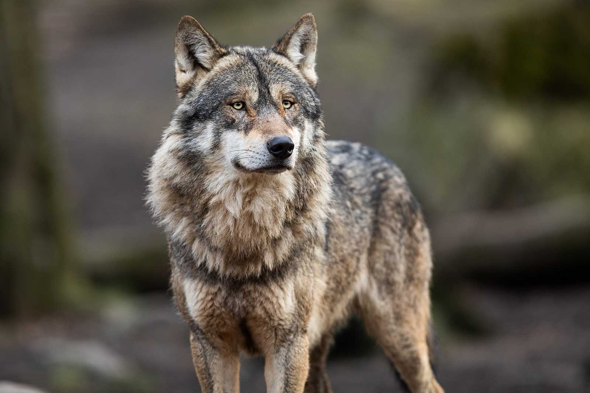
Etimología
Origen Etimologico
La palabra patrimonial lobo viene del latín lupu (m), lobo, y esta, además de vulpis (zorro) del indoeuropeo *wlkwos
o su forma matemática *lwkwos, lobo-zorro, las cuales dan indistintamente o lobo, o zorro o ambas, en diferentes idiomas, talvez
en principio “animal que aulla”, compárese el griego ulaké “aullido”.
*wlkowos significando zorro: alopex griego, vulpis latín, vos holandés.
Los lobos habitan en toda
Eurasia y América del Norte, y han sido introducidos en Australia. Su hábitat varía desde los témpanos de hielo de Groenlandia a los
desiertos de Arabia o las selvas de la India.
Tan vasta distribución ha permitido la aparición de distintas subespecies, que se diferencian en el tamaño, color y longitud del pelaje
o proporciones del morro o las orejas. Se han descrito más de cincuenta subespecies de lobo, pero no se ha encontrado un verdadero
consenso al respecto, y la lista ha sido también condensada, reduciendo las subespecies s entre trece y quince. Modernas
clasificaciones de ácido desoxirribonucleico, anatomía, distribución y migración de varias colonias de lobos indican que en 2005 había
unas treinta y siete subespecies descritas en las que se incluye al perro cantor, dingo y al perro (subespecie doméstica del lobo bajo
el nombre de Canis familiaris).
NOMBRE
UBICACIÓN
FOTO
Canis familiaris o Canis lupus familiaris
Todo el mundo
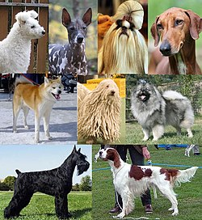
Canis lupus lupus
Europa y Asia
Canis lupus albus
Norte de Rusia
Canis lupus arctos
Ártico canadiense
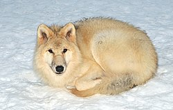
Canis lupus baileyi
México y suroeste de Estados Unidos
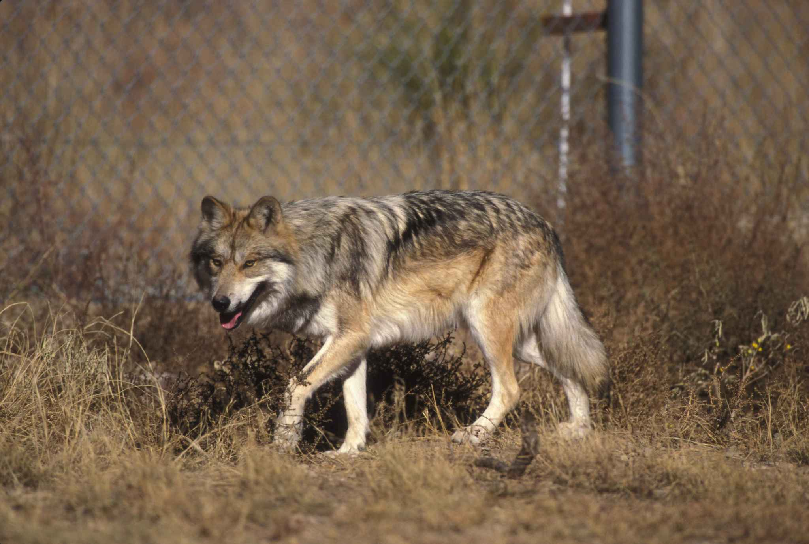
Canis lupus manningi
Este de Groenlandia
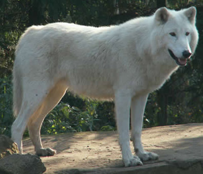
Canis lupus pambasileus
Alaska (Yukón y alrededores)
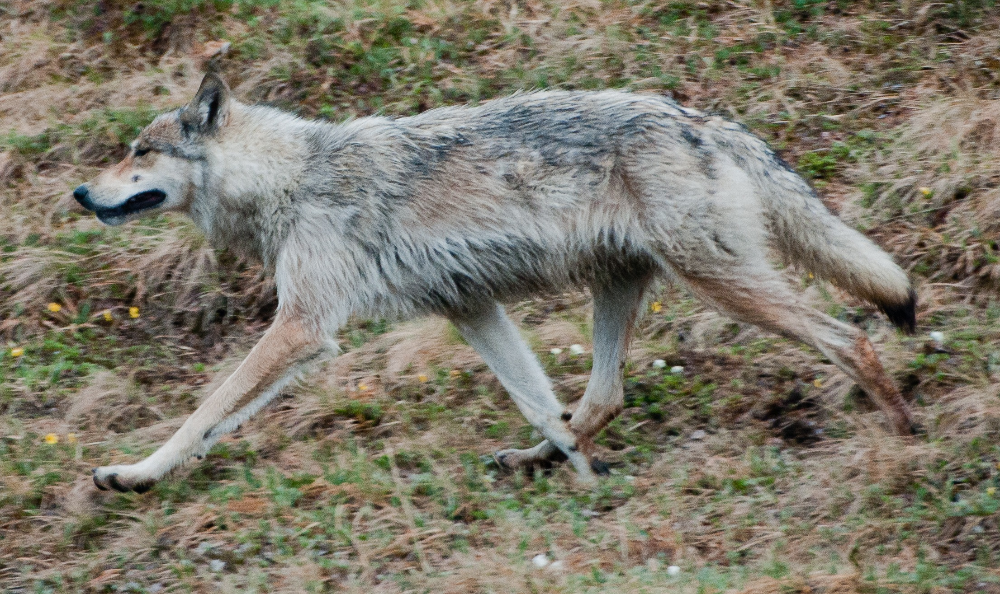
Canis lupus dingo
Sureste de Asia y Australasia
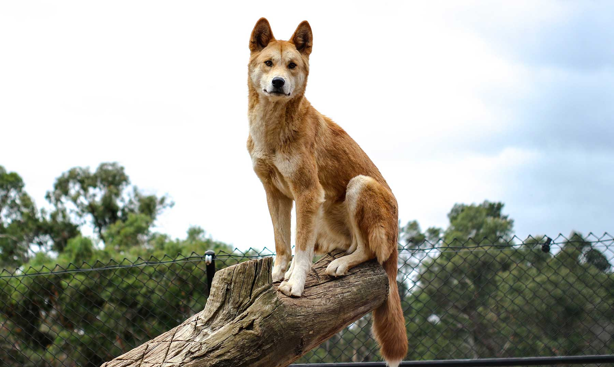
Canis lupus arabs
Egipto, Jordania, península arábiga, Israel
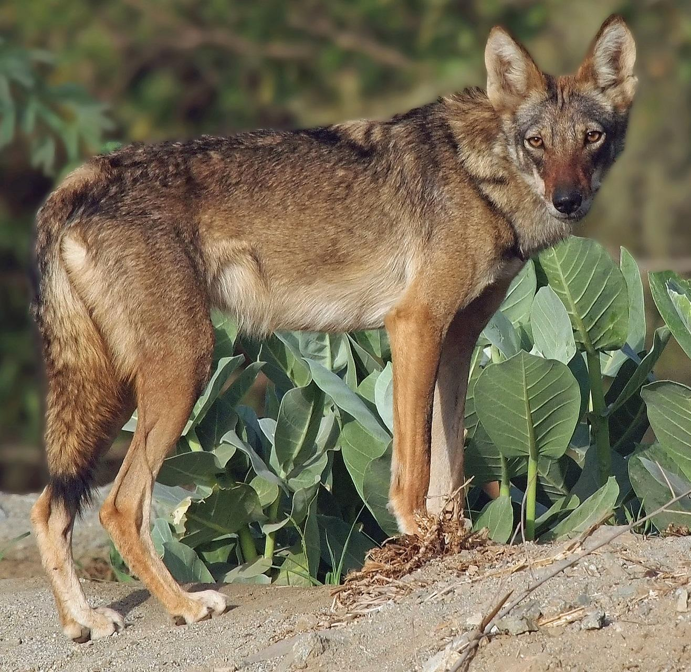
Canis lupus italicus
Península Itálica
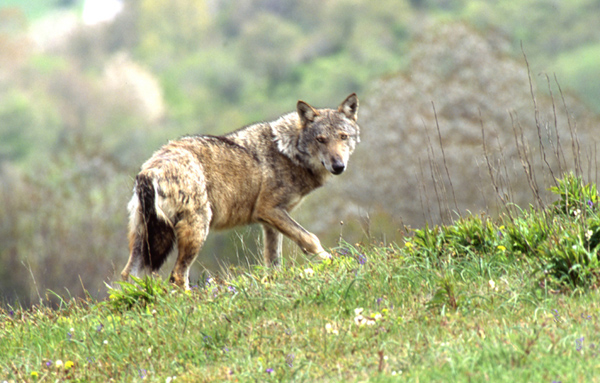
Canis lupus crassodon
Isla de Vancouver
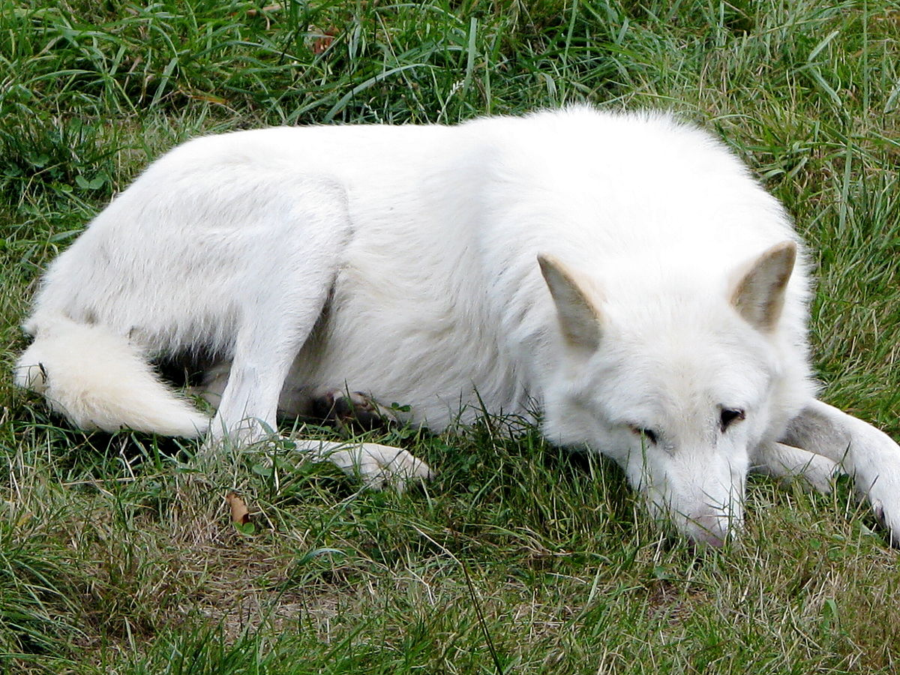
Canis lupus occidentalis
Alaska y noroeste de Canadá
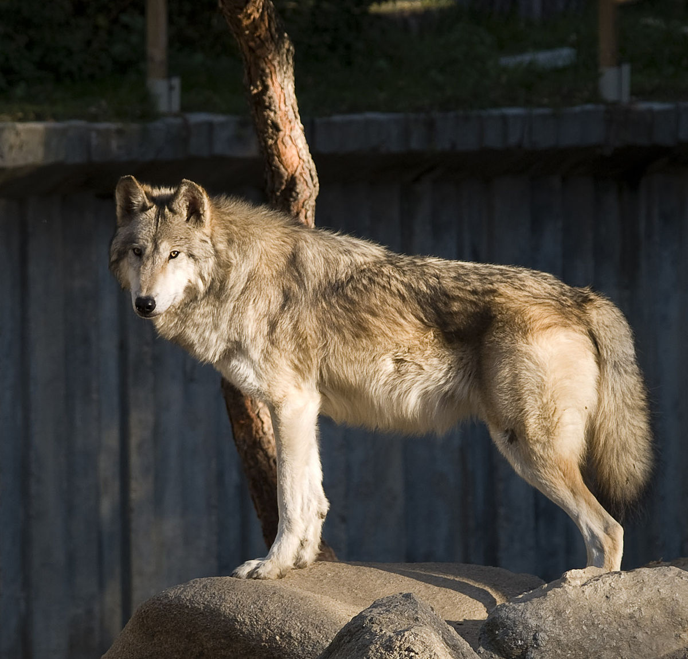
Canis lupus pallipes
Oriente Medio y suroeste de Asia hasta India
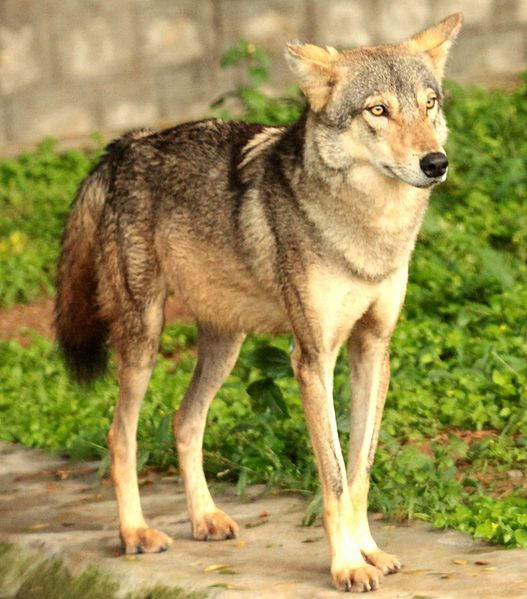
Canis lupus signatus
península ibérica
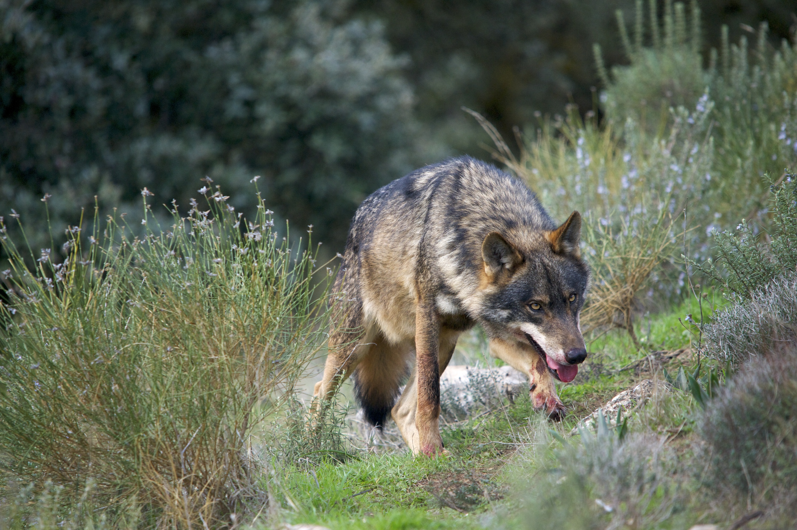
Canis lupus hallstromi
Nueva Guinea
Canis lupaster
Africa y Oriente Medio
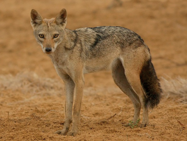
Estado histórico y actual
El lobo ha sido uno de los mamíferos que más se ha distribuido a lo largo del mundo, viviendo en el norte a una latitud de 15° N
en América del Norte y a 12° N en Eurasia. Sin embargo, aunque fue muy abundante, el lobo habita en una pequeña parte de su antiguo
territorio debido a la destrucción de su hábitat y los encuentros de los lobos con los humanos que casi provocaron su extinción. Esta
reducción ha sido muy grande en algunas áreas de Europa, Asia, México y los Estados Unidos debido al envenenamiento y a la persecución
deliberada.
En 1982 y hasta 1994, el lobo estuvo incluido en la lista de animales en peligro de extinción de la Unión Internacional para la
Conservación de la Naturaleza (IUCN). Cambios en la protección de estos animales, los cambios demográficos a áreas urbanas y el uso de
la tierra han parado la disminución en la población del lobo. Además, la re-colonización y los programas de reintroducción han
aumentado las poblaciones del lobo en Europa Occidental y en la zona occidental de los Estados Unidos. Por ello, en 1996, el IUCN
redujo el estado de riesgo del lobo, pasando a ser de menor preocupación. El estado de conservación de los lobos varía enormemente, ya
que en algunas áreas son protegidos y en otras son cazados por deporte o son exterminados como amenazas para la ganadería y los
animales domésticos.
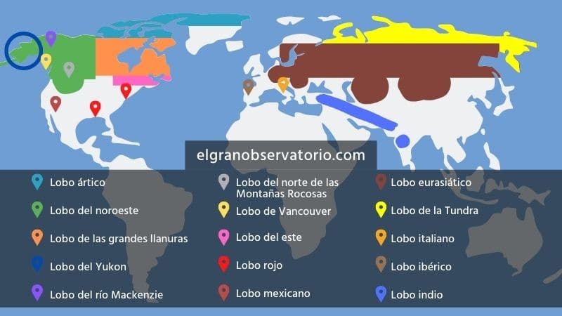
Hábitat y distribución Actual
Toda Norteamérica, Japón, Europa occidental, Rusia y la India, contaban con poblaciones de lobos en abundancia. A pesar de ello, de los antes mencionados, solo Rusia continúa manteniendo un elevado número de ejemplares.En América del Norte, ocupan el norte de Groenlandia, varias islas árticas y gran extensión de Canadá. Estados Unidos apenas conserva unas poblaciones fragmentadas y en México se conservan pocos individuos en cautiverio, ya que la caza y la destrucción del hábitat los redujeron a cifras alarmantes.
Rusia, China, Kazajistán, Nepal y Mongolia son países con gran presencia de subespecies de lobos.
En África y Oriente medio, se conservan de forma fragmentada, pero el lobo dorado africano (Canis anthus) es uno de los más distribuidos.